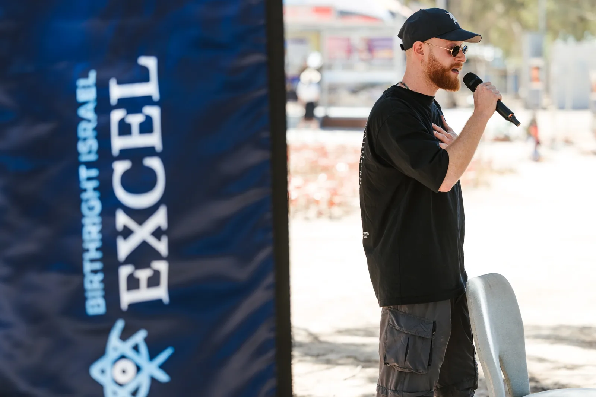
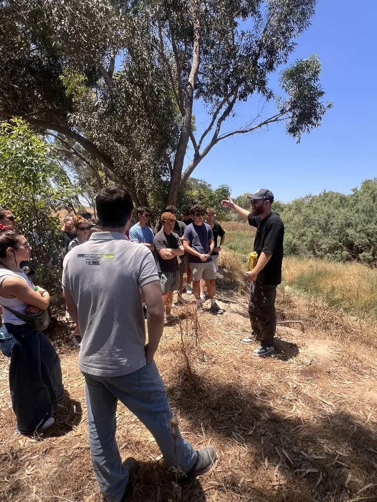
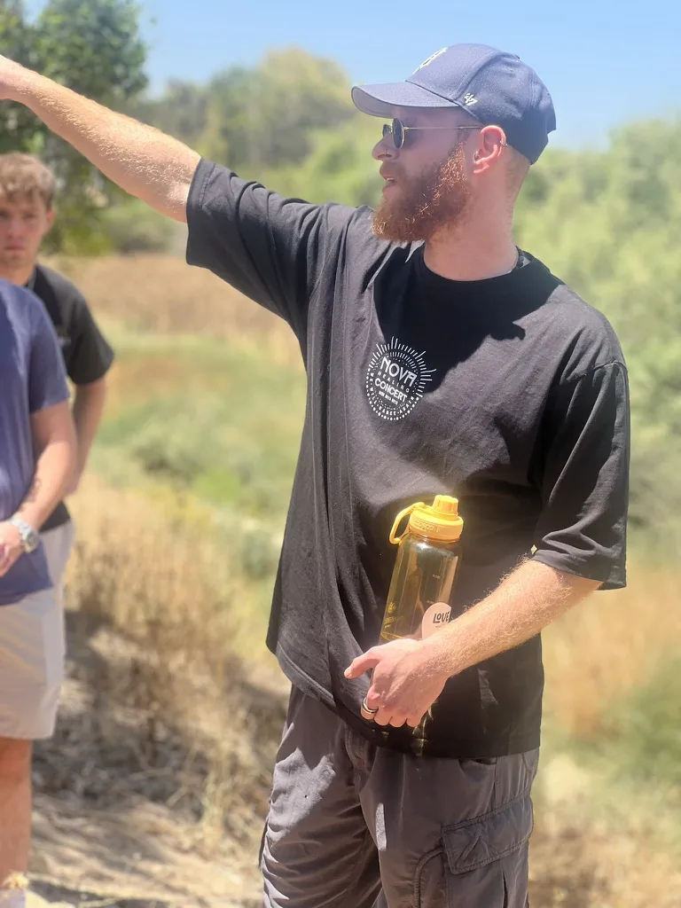
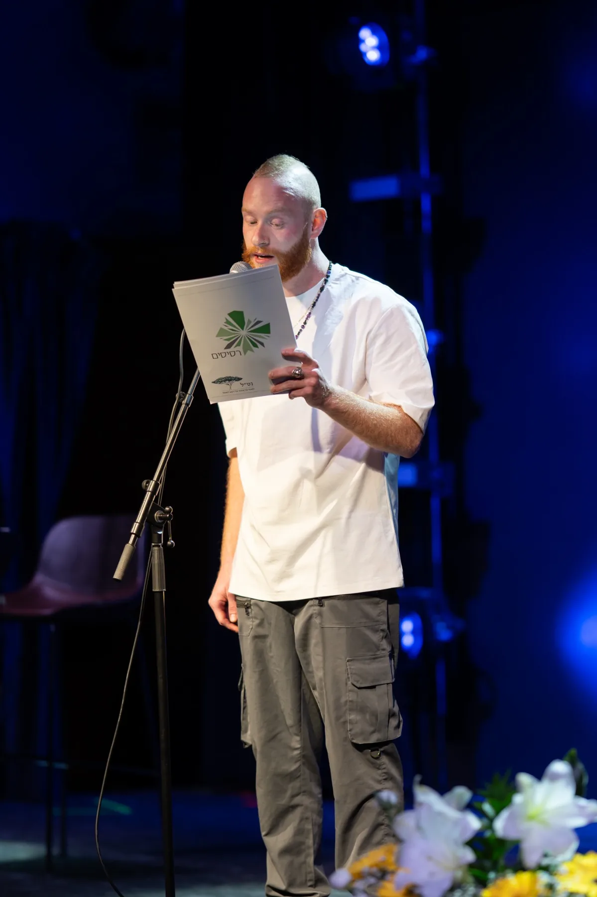
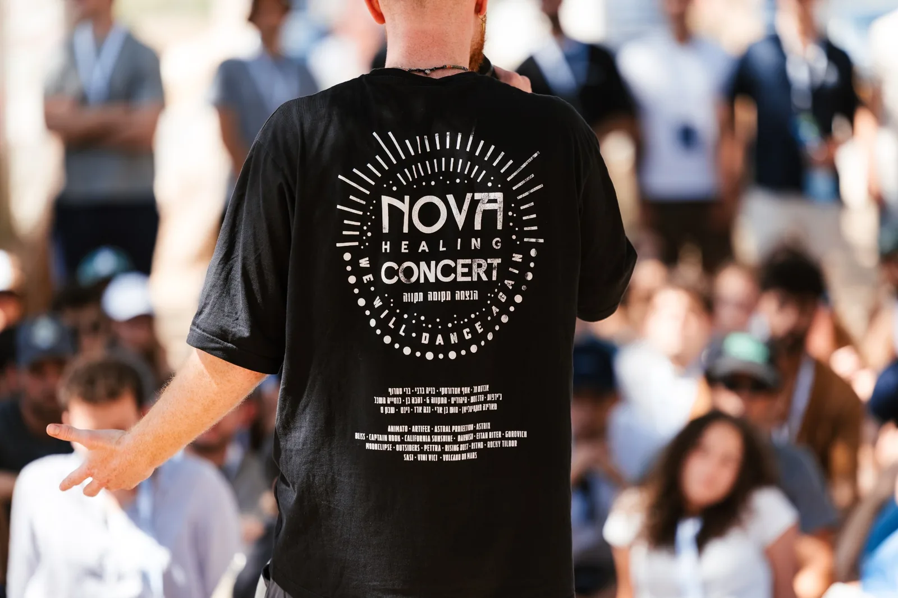
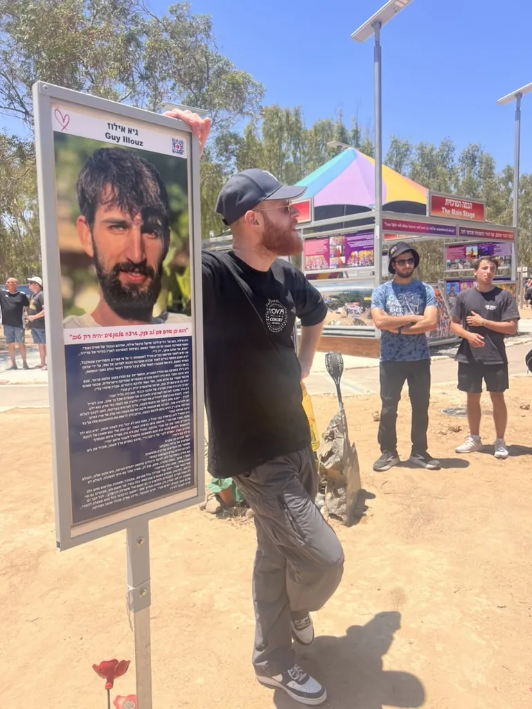

A Festival of Life
Nova was a celebration of music, freedom, love, and shared humanity. Within hours, that light was shattered by the October 7 attack.
Choosing Light
A survivor. A combat paramedic. A storyteller.
From the Nova Music Festival massacre to stages and communities around the world, Lior shares a personal testimony about survival, courage, truth, and choosing light in the face of darkness.

Lior Auvgang is a Nova Festival survivor, speaker, and former IDF combat paramedic from Pardes Hanna, Israel.
On October 7, 2023, Lior arrived at the Nova Music Festival with 25 of his closest friends. What began as a celebration of music, freedom, love, and life became a day that changed him forever.
Today, he shares his testimony with Jewish communities, students, Birthright groups, synagogues, soldiers, and organizations in Israel and abroad.
The Story
Nova was a celebration of music, freedom, love, and shared humanity. Within hours, that light was shattered by the October 7 attack.
As the attack began, Lior’s training as a combat paramedic took over. For two hours, he treated the wounded and did everything he could to save lives.
As the attack intensified, Lior hid in the bushes for more than seven hours while terrorists searched the area. When he emerged alive, he knew his life had been given back for a reason.
Speaking Engagements
Formats can include a keynote lecture, personal testimony session, moderated conversation, Q&A, or a smaller private gathering.
Watch Lior Speak
Gallery





Bring Lior’s Story to Your Community
Reach out directly, or share a few details through the form.